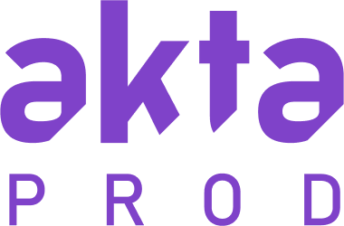

Production
Nous avons décidé d’attribuer les valeurs de partage, convivialité et authenticité à l’agence. Des valeurs qui nous semblaient essentielles dans le milieu de l’audiovisuel.
Création du logo :
Nous avons choisit de créer un logo typographique, pour une simplicité de lisibilité, mais également pour correspondre à l’aspect sobre et sérieux que l’équipe voulait donner à Akta Prod.
Le découpage au niveau des lettres “akta” nous permettent de faire un clin d’œil au monde du cinéma, en référence au cut du montage ou encore au clap emblématique du domaine.


Choix des couleurs et univers graphique :
Au niveau des couleurs, nous avons choisi le violet comme couleur principale pour représenter la créativité, l’imagination et l’indépendance de l’esprit.
Les couleurs complémentaires viennent contraster avec la couleur principale, nous permettant ainsi de créer des sections bien différentes.
Enfin, nous avons fini par mettre en page la charte graphique complète d’Akta Prod, en respectant les couleurs, typographies et éléments graphiques validés par toute l’équipe !
 L'utilisation de Figma comme logiciel de création principal nous a permis de partager un espace de travail coopératif.
L'utilisation de Figma comme logiciel de création principal nous a permis de partager un espace de travail coopératif.
Intégration des goodies :
Par la suite, je me suis personnellement occupé de développer toute la partie print, mais également les goodies de la marque. J’ai notamment participé à la promotion de notre événement, en réalisant une des deux affiches utilisées, mais également les stickers et les invitations personnalisées.
Analyse personnelle
La création d'Akta Prod fut ma première collaboration créative sérieuse. Cela m'a permis d'apprendre à travailler en groupe, à prendre en compte les différents avis et à avancer de manière collective dans une même direction.
Aujourd'hui, j'essayerais d'améliorer légèrement certains aspects de la charte graphique. De plus, j'aimerais faire en sorte que les éléments annexes soient en cohésion totale avec cette dernière.